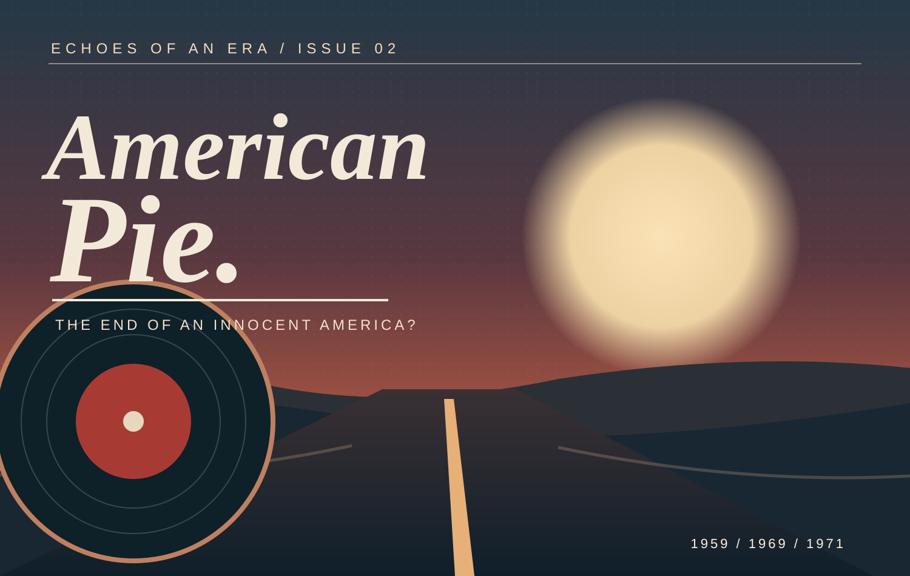

ISSUE 02 · DON MCLEAN · 1971
American Pie：当美国开始为自己的青春唱挽歌
从1959年的摇滚空难，到1960年代美国梦的重塑。一首兼具失落与集体歌唱的作品，如何成为跨世代的文化记忆？
阅读 American Pie 特刊 →音乐从不只是一段旋律。它记录科技的雄心、青春的失落、社会的矛盾与一个时代对自身的想象。我们从作品出发，走向历史，再从历史重新聆听作品。
探索文化特刊 ↓两期独立专题，分别探索太空时代的个体孤独与美国青年文化的历史失落。点击封面或标题进入完整长文。

从1959年的摇滚空难，到1960年代美国梦的重塑。一首兼具失落与集体歌唱的作品，如何成为跨世代的文化记忆？
阅读 American Pie 特刊 →从David Bowie的Major Tom到阿波罗登月：技术胜利、个体孤独与跨国文化记忆如何在音乐中同时存在？
阅读 Space Oddity 特刊 →研究版保留问题、方法、史料、阐释边界与参考文献。均为个人研究讨论稿，未经过同行评审。
以《American Pie》为例，讨论美国梦、选择性怀旧、集体记忆与1960年代社会变迁，避免将歌词解读误当确定史实。
阅读 American Pie 学术版 →以《Space Oddity》为例，探讨1969年历史语境、音乐叙事、集体记忆与跨文化传播的关系。
阅读 Space Oddity 学术版 →《时代的回响》是持续更新的个人音乐史、文化研究与长篇特写档案。每一期都尽量区分可核验的历史事实、创作者的回忆，以及研究者提出的解释。我们关心的不是替一首作品寻找唯一答案，而是理解为什么某些声音能够持续改变人们对过去的想象。